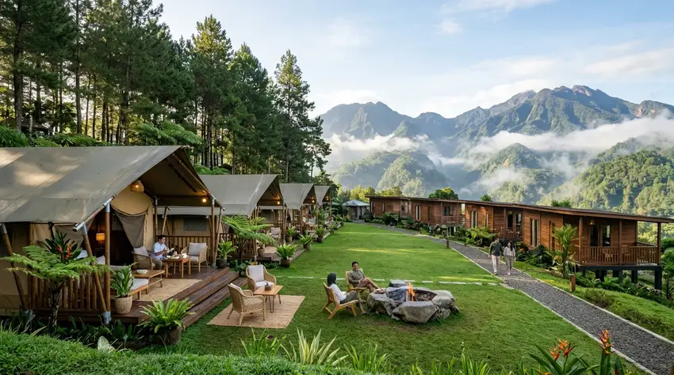

Glamping vs hotel vs villa di Batu Malang berbeda pada suasana, privasi, dan layanan: glamping unggul pengalaman alam, hotel unggul kepraktisan, villa unggul ruang untuk rombongan.
Ringkasan Inti
- Glamping mewah cocok untuk pengalaman alam yang berkesan dan momen romantis.
- Hotel cocok untuk pengunjung yang mengutamakan layanan lengkap dan lokasi strategis.
- Villa cocok untuk keluarga besar atau kelompok yang ingin ruang pribadi luas.
- Cuaca pegunungan memengaruhi kenyamanan tenda lebih besar dibanding bangunan permanen.
- Pilihan terbaik bergantung pada tujuan, jumlah orang, dan anggaran.
Kota Batu memiliki suhu harian yang umumnya sekitar 17 hingga 25 derajat Celsius (sumber: gambaran klimatologi BMKG dan profil Kota Batu, data beberapa tahun terakhir). Kondisi sejuk ini berpengaruh pada cara pengunjung menilai kenyamanan setiap jenis penginapan.
Apa Perbedaan Utama Glamping, Hotel, dan Villa di Batu?
Perbedaan utama glamping, hotel, dan villa di Batu terletak pada struktur bangunan, suasana, tingkat privasi, jenis layanan, dan kedekatan dengan alam.
Glamping berbentuk tenda atau kabin semi-permanen dengan fasilitas premium dan suasana terbuka. Hotel berbentuk bangunan permanen dengan layanan standar seperti resepsionis, restoran, dan kebersihan harian. Villa berbentuk rumah atau bangunan mandiri, sering dengan beberapa kamar, dapur, dan ruang berkumpul.
Ketiganya dapat nyaman, tetapi menawarkan pengalaman berbeda. Memahami perbedaan ini membantu pengunjung memilih sesuai tujuan perjalanan.
Kapan Glamping Mewah Menjadi Pilihan Terbaik?
Glamping mewah menjadi pilihan terbaik ketika pengunjung ingin merasakan suasana alam, privasi pasangan atau keluarga kecil, dan pengalaman menginap yang berbeda dari hotel biasa.
Glamping cocok untuk bulan madu, kejutan ulang tahun, liburan akhir pekan, atau perjalanan bersama sahabat. Aktivitas seperti api unggun, sarapan di teras, dan melihat langit malam menjadi daya tarik utama.
Batasannya, tenda lebih terpengaruh cuaca, suara alam, dan suhu malam. Pengunjung yang sensitif terhadap dingin atau suara sebaiknya menanyakan insulasi, pemanas, dan kondisi tenda terlebih dahulu.
Apakah Hotel di Batu Lebih Praktis untuk Perjalanan Singkat?
Ya, hotel di Batu umumnya lebih praktis untuk perjalanan singkat karena menawarkan layanan 24 jam, fasilitas standar, dan lokasi yang dekat dengan pusat wisata.
Hotel cocok bagi pengunjung yang sering berpindah tempat, membawa bayi atau lansia, atau membutuhkan layanan seperti resepsionis, lift, dan restoran. Kamar permanen juga memberi perlindungan lebih baik dari hujan dan angin.
Kekurangan hotel adalah suasana yang kurang menyatu dengan alam, kecuali hotel berlokasi di kawasan pemandangan. Beberapa hotel juga ramai saat libur panjang.

Pemandangan resor glamping mewah dan kabin alami berpadu dengan panorama perbukitan hijau Batu Malang.
Kapan Villa Lebih Menguntungkan daripada Glamping?
Villa lebih menguntungkan daripada glamping ketika rombongan besar membutuhkan ruang bersama, dapur, beberapa kamar, dan privasi satu bangunan untuk seluruh anggota.
Villa sering dipilih untuk reuni keluarga, arisan, atau gathering kecil. Biaya per orang bisa lebih efisien jika villa dihuni penuh sesuai kapasitas.
Namun, villa biasanya tidak selalu menyediakan layanan sepenuh hotel. Pengunjung perlu memeriksa kebersihan, perlengkapan dapur, aturan kebisingan, dan kebijakan penggunaan fasilitas.
Mana yang Lebih Cocok untuk Keluarga dengan Anak Kecil?
Untuk keluarga dengan anak kecil, hotel atau villa umumnya lebih praktis, tetapi glamping mewah tetap cocok jika tenda aman, hangat, dan memiliki fasilitas kamar mandi pribadi.
Anak kecil biasanya membutuhkan suhu stabil, ruang gerak, dan keamanan area. Tanyakan tentang pagar, pencahayaan, kebijakan usia, dan ketersediaan kasur tambahan.
Glamping dapat menjadi pengalaman berkesan bagi anak yang suka alam, selama orang tua menyiapkan pakaian hangat, obat pribadi, dan rencana jika cuaca berubah.
Mana yang Lebih Cocok untuk Pasangan dan Bulan Madu?
Untuk pasangan dan bulan madu, glamping mewah sering dipilih karena suasananya romantis, privat, dan dapat dilengkapi dekorasi, makan malam, atau bak rendam air hangat.
Hotel butik dan villa privat juga bisa menjadi pilihan, terutama bagi pasangan yang menginginkan ruang lebih luas atau layanan penuh. Perbedaannya ada pada suasana: glamping menonjolkan alam, sedangkan hotel menonjolkan layanan.
Konfirmasi paket khusus dan jadwal persiapan kepada pengelola, agar kejutan atau dekorasi berjalan sesuai rencana.
Bagaimana Menentukan Pilihan Berdasarkan Prioritas?
Tentukan pilihan penginapan dengan memprioritaskan tujuan perjalanan, jumlah orang, anggaran, toleransi cuaca, dan kebutuhan layanan, lalu bandingkan opsi dengan kriteria yang sama.
Gunakan panduan singkat ini:
- Ingin pengalaman alam dan suasana romantis: pilih glamping mewah.
- Ingin kepraktisan dan layanan lengkap: pilih hotel.
- Ingin ruang luas untuk rombongan: pilih villa.
Untuk panduan menyeluruh tentang pemilihan lokasi dan fasilitas, baca glamping mewah di Batu Malang. Untuk persiapan menginap, lihat tips persiapan dan waktu terbaik menginap di glamping Batu Malang.
FAQ
Tidak selalu. Harga glamping mewah dapat lebih tinggi atau lebih rendah dari hotel tergantung tipe tenda, fasilitas, musim, dan lokasi, sehingga perlu dibandingkan secara langsung.
Glamping dapat nyaman untuk lansia jika aksesnya mudah, kamar mandi dekat, dan suhu malam terkendali. Jika akses menanjak, hotel atau villa dengan fasilitas permanen mungkin lebih praktis.
Keduanya bisa privat. Villa menawarkan bangunan mandiri untuk rombongan, sedangkan glamping memberi privasi tenda dengan suasana alam. Tingkat privasi bergantung pada tata letak dan jarak antar unit.
Glamping mewah, hotel, dan villa di Batu Malang masing-masing punya keunggulan. Glamping menang pada pengalaman alam, hotel pada kepraktisan, dan villa pada ruang untuk rombongan.
Tentukan prioritas perjalanan lebih dulu, lalu bandingkan pilihan dengan kriteria yang sama sebelum memesan.